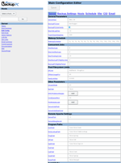

Bedienung
Dieser Artikel wurde für die folgenden Ubuntu-Versionen getestet:
Ubuntu 16.04 Xenial Xerus
Ubuntu 14.04 Trusty Tahr
Dieser Artikel beschreibt die Nutzung der Weboberfläche von BackupPC. Installation und Konfiguration sind im genannten Hauptartikel beschrieben.
Login¶
Beim Login taucht folgendes Fenster auf, welches die Eingabe des Benutzernamens "backuppc" und des Passworts, welches bei der Installation gezeigt wurde, erfordert.
Das Webinterface¶
Auf der linken Seite befindet sich eine Combobox, mit der man alle verfügbaren Hosts auswählen kann.
Status¶

Nach erfolgreichem Login sieht man das Statusfenster, auf dem folgende Informationen als Übersicht dargestellt werden:
Generelle Übersicht mit Informationen über Server, Größen und Zeiten
Aktuell laufende Backups
Fehler, die beachtet werden sollen
Grafiken mit einer Monats- und Jahresübersicht
Die Bedienung erfolgt über die (konfigurierbare) Navigation auf der linken Seite. Unter "Admin Options" kann BackupPC neu gestartet werden.
Zusammenfassung¶
Zeigt eine Übersicht über alle vorhandenen inkrementellen und vollständigen Backups, sowie Hosts ohne Backups.
Konfiguration:Server¶

| General Parameters | |
| ServerHost | Der Name des Hosts, auf dem BackupPC läuft |
| BackupPCUser | Der Benutzername |
| BackupPCUserVerify | Wenn angeschaltet, prüft BackupPC, ob die Benutzer-ID (euid) des aufrufenden Benutzers übereinstimmt und bricht sowohl das Webinterface als auch auf Kommandoebene ab, wenn diese nicht stimmt. Das verhindert zum Beispiel einen versehentlichen Aufruf als root. |
| MaxOldLogFiles | Diese Zahl stellt die Tage des ältesten Logfiles dar. Für drei Wochen Aufbewahrung muss man also 21 angeben. |
| TrashCanCleanSleepSec | Zeitintervall, wie oft der Mülleimer überprüft wird. Standard ist 300 (5 Minuten). |
| Wakeup Schedule | |
| WakeupSchedule | Die Zeiten, zu denen BackupPC aufwachen soll. Die Angaben erfolgen als array in [] und sind als Stunden nach 00:00 Uhr zählbar. Es dürfen Dezimalzahlen verwendet werden. [1, 7.8] würde zum Beispiel um ein Uhr nachts und um 7:48 Uhr morgens wecken. Es gilt das 24-Stunden-Format. |
| Concurrent Jobs | |
| MaxBackups | Maximale Anzahl an gleichzeitig ausführbaren Backups |
| MaxUserBackups | Anzahl der von Benutzern zeitgleich ausführbaren Backups. Die Summe von MaxBackups und MaxUserBackups ergibt die maximale Anzahl an insgesamt gleichzeitig ausführbaren Backups. |
| MaxPendingCmds | Maximale Anzahl in der Warteschleife |
| MaxBackupPCNightlyJobs | Anzahl der "nightly processes". BackupPC räumt Nachts, zum ersten Zeitpunkt der in WakeUpSchedule definierten Zeit, den Daten-Pool auf und löscht dort nicht mehr benötigte Dateien. |
| BackupPCNightlyPeriod | Alle X Nächte wird aufgeräumt. Standard ist 1, also jede Nacht. |
| Pool Filesystem Limits | |
| DfCMD | Die Befehlszeile, die df startet. |
| DfMaxUsagePct | Maximal zu nutzender Prozentsatz der verfügbaren Partition. Wird der Prozentsatz überschritten, so werden nur noch laufende Backups beendet. Backups durch Benutzeranforderungen laufen ebenfalls. |
| HardLinkMax | Maximale Anzahl an Hardlinks die vom Hauptverzeichnis unterstützt wird. Standard ist 31999. |
Konfiguration:Hosts¶
| HostName | ist der NetBios-Name oder der des PCs. Dieser ist bevorzugt in Kleinbuchstaben einzugeben (bei Ubuntu Standard) |
| DHCP | Sucht den Klienten, wenn er keine feste IP hat. Hinweis bei Samba-Nutzung: DHCP darf nur aktiviert werden, wenn es sich nicht um einen per nmblookup auffindbaren Klienten handelt. Wird DHCP aktiviert, so wird die Eingabe von ClientNameAlias ignoriert. Ebenfalls ist die Angabe eines IP-Adressbereiches nötig. Unter Linux kann der NetBios-Name mittels des Samba-Services nmb ermittelt werden. Alternativ lässt sich in der Konfiguration die Variable $Conf{NmbLookupFindHostCmd} auf jedes beliebige Programm ändern, welches die korrekte IP-Adresse angibt. |
| User NAME | Dies sollte der Hauptbenutzer des Systems sein. Dieser erhält alle Emails bezüglich des Klienten und die Zugriffsrechte auf die Backups dieses Gerätes. Der Name kann leer gelassen werden, wenn niemand die Emails oder den Zugriff bekommen soll. Administratoren haben natürlich weiterhin Zugriff. |
| More users | Weitere Benutzer können durch Kommata getrennt hinzugefügt werden. Diese haben ebenfalls Zugriff auf die Backups, erhalten aber keine Email-Informationen. |
Das Einrichten eines neuen Hosts über die Schaltfläche "Add" ist recht leicht. Die aktuelle IP - oder wahlweise der Name aus der hosts-Datei wird als IP angegeben. Bei dynamischer Vergabe über DHCP ist der Haken zu setzen. Abschließend muss noch der / die Benutzername(n) eingetragen werden.
Die Erkennung von Geräten erfolgt über die perl-Funktion gethostbyname(). Zur manuellen Überprüfung ob diese erfolgreich ist, kann man folgenden Befehl im Terminal verwenden:
perl -e 'print(gethostbyname("NAME") ? "Gefunden\n" : "NICHT gefunden\n");' Alternativ wird nmblookup verwendet, um die IP zum Hostnamen zu finden.
Als Konfiguration wird die unter "Edit Config" gewählte benutzt.
Konfiguration:xfer¶
Xfer ist ein Wortzusammenbau aus der Unbekannten X und dem englischen Wort transfer und deutet die unterschiedlichen Möglichkeiten der Transfer-Protokolle, wie rsync, smb, etc. an.
Hier wird die Tabelle mit der Auswahl rsync dargestellt! Andere Methoden bieten andere Auswahlmöglichkeiten.
| XferMethod | |
| XferMethod | Mögliche Methoden: archive, ftp, rsync, rsyncd, smb, tar |
| XferLogLevel | Verbose der Logdatei: 0=ruhig, 1=1 Zeile pro Datei, 2=zusätzlich übersprungene, höhere Werte=mehr Output |
| ClientCharset | Verwendeter Zeichensatz des Klienten. Standard ist utf8, nur abweichende müssen eingetragen werden. |
| ClientCharsetLegacy | Nur für alte Backups vor Version 3.0! |
| Rsync Settings | |
| RsyncShareName | Hier werden die zu sichernden Pfade angegeben. Beispielsweise / und/oder /home. Diese werden in der Konfiguration als Array in der Form ['Pfad1', 'Pfad2', ..., 'PfadN']; gespeichert. |
| RsyncCsumCacheVerifyProb | Dies ist eine Einstellung zur Verifizierung der Checksummen. Diese Option wirkt nur, wenn --checksum-seed=INTEGER gesetzt ist. 0 bedeutet 0%, 1=100%. |
| Include/Exclude | |
| BackupFilesOnly | Wenn definiert, werden ausschließlich diese Dateien/Verzeichnisse unterhalb von RsyncShareName gesichert. Die Angabe erfolgt im Array in der Form ['Datei1', 'Pfad1', ..., 'PfadDateiN']; |
| BackupFilesExclude | Auszuschließende Dateien/Verzeichnisse beim Backup. Empfohlen wird das ausschließen von proc, sys, run, mnt, tmp bei der Sicherung von /. |
| Rsync Paths/Commands/Args | |
| RsyncClientPath | Pfad zu rsync, Standard ist /usr/bin/rsync |
| RsyncClientCmd | Die Befehlszeile zu rsync. Hier kann der Benutzer root durch einen anderen ersetzt werden. Siehe auch Klienten ohne Root-Zugang |
| RsyncClientRestoreCmd | Der Wiederherstellungsbefehl. Hier kann ebenfalls der Benutzer root ersetzt werden. |
| RsyncArgs | Optionen zur Sicherung. |
| RsyncArgsExtra | Hier können klient-spezifische Änderungen eingetragen werden, wie bspw. ein --exclude. |
| RsyncRestoreArgs | Optionen zur Wiederherstellung. |
Konfiguration:email¶
Die Email-Konfiguration wird benötigt für die Zustellung der von BackupPC versendeten Zusammenfassungen, Fehlermeldungen und Erinnerungen.
| Email settings | |
| SendmailPath | Der Pfad zum verwendeten Email-Versender. |
| EMailNotifyMinDays | BackupPC prüft jede Nacht auf Änderungen. Um die Nutzer nicht über die Maße zu belästigen, lässt sich hier einstellen, wie oft eine Informationsmail gesendet wird. Der Standard 2.5 bedeutet, es werden maximal alle 3 Tage Emails an den Nutzer gesendet. |
| EMailFromUserName | Der Absender. |
| EMailAdminUserName | Admin-Empfänger für nächtliche Informationen, Fehler und Warnungen. |
| EMailUserDestDomain | Die Domain für den Benutzer. Wird z.B. @daheim.de eingegeben, so wird die Email an Benutzername@daheim.de gesendet. Der Benutzername ist unter Konfiguration:host definiert. |
| Email User Messages | |
| EMailNoBackupEverSubj / EMailNoBackupEverMesg | Hier können Titel und Nachricht angepasst werden, falls ein Klient noch kein Backup hat. Dies ist lokalisiert und die Standard-Texte sind unter lib/BackupPC/Lang/SPRACHE.pm hinterlegt. |
| EMailNotifyOldBackupDays | Wenn das neueste Backup älter ist, als die hier angegebene Zeit, geht eine Mail an den Klienten raus. |
| EMailNoBackupRecentSubj / EMailNoBackupRecentMesg | Hier können Titel und Nachricht angepasst werden, falls ein Klient ein altes Backup hat. Dies ist lokalisiert und die Standard-Texte sind unter lib/BackupPC/Lang/SPRACHE.pm hinterlegt. |
| EMailNotifyOldOutlookDays | Wenn die neuesten Outlook-Dateien älter sind, als die hier angegebene Zeit, geht eine Mail an den Klienten raus. |
| EMailOutlookBackupSubj / EMailOutlookBackupMesg | Hier können Titel und Nachricht angepasst werden, falls ein Klient zu alte Outlook-Dateien hat. Dies ist lokalisiert und die Standard-Texte sind unter lib/BackupPC/Lang/SPRACHE.pm hinterlegt. |
| EMailHeaders | Zusätzliche Email-Header in utf8. |
Konfiguration:Backup Settings¶
Einstellungen für NmbLookup, CompressLevel, Timeour, Logfiles, DumpCommands
| Client Lookup | |
| ClientNameAlias | Override für den Klientnamen. Dies ermöglicht mehrere Klienten auf dem selben physischen Host. Erlaubt sind Namen oder IP-Adressen. Achtung: Funktioniert nicht, wenn DHCP genutzt wird! |
| NmbLookupCmd | Der Befehl für nmblookup (IP-Adresse). Nur für DHCP-hosts. |
| NmbLookupFindHostCmd | Der Befehl für nmblookup (NetBios-Name). Nur für DHCP-hosts. |
| FixedIPNetBiosNameCheck | Zur Verifizierung der NetBios-Namen bevor die Sicherung über DHCP startet. |
| PingCmd | Der Pfad zum ping-Befehl. |
| PingMaxMsec | Nutzt ping -s, wenn verfügbar. Standard sind 20msec. |
| Other | |
| ClientTimeout | Wartezeit beim Backup in Sekunden. Erfolgt in der Zeit kein weiterer Transfer, wird das Backup beendet. |
| MaxOldPerPCLogFiles | Die Zeit in Monaten, wie lange Logfiles pro Klient aufgehoben werden. Standard ist ein Jahr (12). |
| CompressLevel | Stellt das Kompressionslevel der zu sichernden Daten ein. Gültige Werte von 0-9. 0=aus, 3=empfohlen. Für weitere Informationen: http://www.zlib.net/manual.html  |
| User Commands | |
| DumpPreUserCmd...ArchivePostUserCmd | Optionale Befehle, welche vor und nach den Backups und Wiederherstellungen laufen können. |
| UserCmdCheckStatus | Bool um bei den o.g. Befehlen den Exit-Status zu prüfen. |
Konfiguration:Schedule¶
| Full Backups | |
| FullPeriod | Zeitraum in Tagen zwischen zwei vollen Backups. |
| FullKeepCnt | Anzahl der vollen Backups, die aufgehoben werden sollen. Muss >=1 sein! Hier kann ebenfalls eine Angabe als Array erfolgen. Beispielsweise würde [1, 0, 1, 0, 1, 0, 1] insgesamt vier volle Backups enthalten, wobei jedes zweite gelöscht würde. |
| FullKeepCntMin | Hebt mindestens n Backups auf, auch wenn die unter FullAgeMax angegebene Zeit überschritten werden sollte. |
| FullAgeMax | Backups, die älter sind als die hier angegebene Anzahl Tage werden gelöscht. |
| Incremental Backups | |
| IncrPeriod | Zeitraum in Tagen zwischen zwei inkrementellen Backups |
| IncrKeepCnt | Anzahl von aufzuhebenden inkrementellen Backups. Muss ebenfalls >= 1 sein. |
| IncrKeepCntMin | Anzahl der vollen Backups, die aufgehoben werden sollen. Muss >=1 sein! Hier kann ebenfalls eine Angabe als Array erfolgen. Beispielsweise würde [1, 0, 1, 0, 1, 0, 1] insgesamt vier volle Backups enthalten, wobei jedes zweite gelöscht würde. |
| IncrAgeMax | Backups, die älter sind als die hier angegebene Anzahl Tage werden gelöscht. |
| IncrLevels | Stellt ein, wie viele Ebenen die inkrementelle Sicherung in Bezug auf ein volles Backup (=Level 0) haben. Der Wert 1 würde jedes inkrementelle Backup auf das volle Backup beziehen, das Array [1, 2] würde das zweite Backup in Abhängigkeit des ersten inkrementellen Backups machen und dort lediglich alle Daten sichern, die sich seit 1 geändert haben. Zur Sicherung ausgehend vom vollen Backup müssen natürlich beide erhalten bleiben, um alle Änderungen des letzten Vollbackups zu enthalten. |
| IncrFill | Wenn aktiv, werden inkrementelle Backups mit Hardlinks der ungeänderten Dateien zum vollen Backup versehen. |
| Blackouts | |
| BackupsDisable | Diese Einstellung ermöglicht das aussetzen von Backups von nicht mehr länger aktiven Klienten. Mögliche Werte: 2=gar keine Backups mehr, 1=nur noch manuelle Backups, 0=Backups aktiv |
| BlackoutBadPingLimit / BlackoutGoodCnt | Klienten, die ständig oder fast immer an sind können außerhalb der Arbeitszeiten gesichert werden. Die Rahmenbedingungen werden mit BadPing(maximale Anzahl nicht erreichbar) und GoodCnt(mindestens erreichbar) festgelegt. Wenn der Klient die GoodCnt-Anzahl erfüllt, wird er nicht in den Zeiten gesichert, die unter BlackoutPeriods eingestellt sind. |
| BlackoutPeriods | |
| hourBegin | Startzeit an denen nicht gesichert werden soll. |
| hourEnd | Endzeit der "Sperre". |
| weekDays | Tage an denen die Sperre gilt. |
| Other | |
| PartialAgeMax | Anzahl der Tage, die teilweise Sicherungen aufbewahrt werden. |
| RestoreInfoKeepCnt | Anzahl der Wiederherstellungs-Logdateien. |
| ArchiveInfoKeepCnt | Anzahl der Archivierungs-Logdateien. |
| BackupZeroFilesIsFatal | Diese Option ermöglicht es, leere Freigaben zu sichern, ohne dass das Backup mit Fehlern abgebrochen wird. |
Konfiguration:CGI¶
| Admin Privileges | |
| CgiAdminUserGroup | Die Benutzergruppen, die erweiterte Rechte besitzen. Diese haben abgesehen von Start/Stop/Durchsuchen und Wiederherstellen Vollzugriff auf alle Klienten, inklusive des Status und aller Logdatei-Informationen. |
| CgiAdminUsers | Äquivalent zu den Gruppen können hier einzelne Benutzernamen eingetragen werden. Soll jeder Benutzer Adminrechte haben, was ausdrücklich nicht empfohlen wird, kann hier ein Asterisk(*) gesetzt werden. |
| Page Rendering | |
| Language | Umstellen des Webinterface und Mail-Textes auf eine andere Sprache. |
| CgiNavBarAdminAllHosts | Standardmässig aktivierte Einstellung: Alle Administratoren sehen in der ComboBox eine komplette Liste der Klienten. Bei Deaktivierung werden lediglich die Klienten angezeigt, für die der Benutzer unter hosts konfiguriert wurde. |
| CgiSearchBoxEnable | An-/Ausschalten der Suchzeile |
| CgiNavBarLinks | Hier können zusätzliche Navigations-Links eingetragen werden. Diese sind sowohl für Administratoren, als auch Benutzer sichtbar. |
| CgiStatusHilightColor | Hier können die Farben des Statusfensters definiert werden. |
| CgiDateFormatMMDD | Datumsformat: 0=DD/MM, 1=MM/DD, 2=YYYY-MM-DD |
| CgiHeaders | Zusätzlicher CGI-header Text. |
| CgiExt2ContentType | Hier können zusätzliche Inhaltstypen für die Wiederherstellung definiert werden. Siehe auch $ExtToContentType. |
| CgiCSSFile | CSS stylesheet für das CGI-Interface. |
| Paths | |
| CgiURL | URL zum BackupPC_Admin CGI script, welches für Email-Nachrichten verwendet wird. |
| CgiImageDir | Verzeichnis zur Bildspeicherung, welches unterhalb des "document root2 des Apache Webservers liegen sollte. Diese Variable wird nicht von BackupPC selbst, sondern bei einem Upgrade in der configure.pl verwendet. |
| CgiImageDirURL | Vom CGI-Script verwendeter Bildspeicherort. Die URL wird ohne http://host angegeben. |
| User URLs | |
| CgiUserHomePageCheck | Hier können Benutzernamen anklickbar gemacht werden und auf eine html-Seite verweisen. Diese muss als absoluter Pfad angegeben werden. Beispiel: /var/www/html/users/%s.html. Standard ist ein mailto: Link. |
| CgiUserUrlCreate | Bietet den Link für CgiUserHomePageCheck. Beispiel: http://meineHomeServerIP/users/%s.html |
| User Config Editing | |
| CgiUserConfigEditEnable | Erlaubt/Verbietet den Benutzern ihre Klient-Konfiguration zu ändern. |
| CgiUserConfigEdit | Legt die editierbaren Variablen für Benutzer fest. ACHTUNG: Darf ein Benutzer die Kommandozeilen ändern, ist er in der Lage ein eigenes Shell-Script mit den Rechten vom Benutzer backuppc auszuführen und kann damit jede Menge böses tun! |
- Erstellt mit Inyoka
-
 2004 – 2017 ubuntuusers.de • Einige Rechte vorbehalten
2004 – 2017 ubuntuusers.de • Einige Rechte vorbehalten
Lizenz • Kontakt • Datenschutz • Impressum • Serverstatus -
Serverhousing gespendet von